By the end of this session, you should be able to:
Explain what is a time series
Explain how time series analyses can be used in drug utilization research
Use regression and ARIMA to model time series
Conduct interrupted time series analyses
Disclosures
I have no personal or financial relationships relevant to this presentation
Some slides were adapted from last year’s talk by Dr. Mina Tadrous
Declaration of AI-assisted technologies
All instructional material in this presentation was written by the author except where external sources are cited. OpenAI Codex (GPT-5.6-Sol, reasoning: ultra) helped format the slide deck. The author reviewed, edited, and verified the formatting suggestions as needed and takes full responsibility for the final product.
Univariate time series
A set of observations of the same variable, indexed by time
Usually, at regular time intervals
Key difference from usual data: observations are not necessarily independent \[
\begin{align}
x_t
&= x_{t-1} + w_t \\
&= (x_{t-2} + w_{t-1}) + w_t
\end{align}
\]
Time series analyses
Used across many fields, most commonly in finance and economics
From pharmacopeidemiology lens: a repeated cross-sectional analysis
Users were hierarchically defined based on their diabetes drug therapy in the prior year to the end of the quarter:
Insulin
Hypoglycemia-inducing oral antihyperglycemic
Other oral antihyperglycemic
No drug therapy
Motivating example - emergency department visits
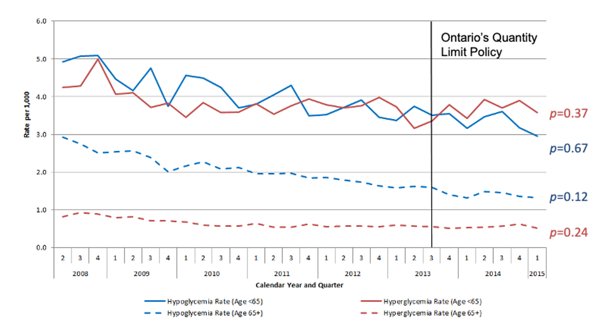
Rates of emergency department visits for hypoglycemia and hyperglycemia
Motivating example - mean HbA1c
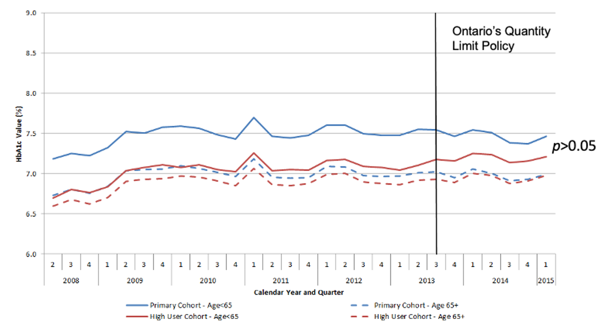
Mean HbA1c (overall and among high-use cohort)
Time series characteristics
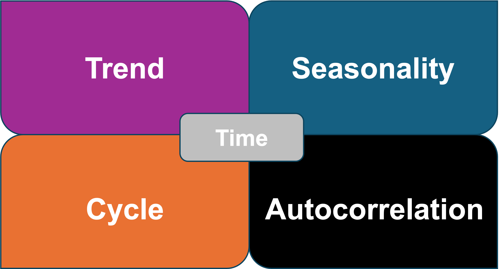
Trend
A persistent, overall upward or downward pattern
May be due to population growth, shifting prescribing patterns, etc.
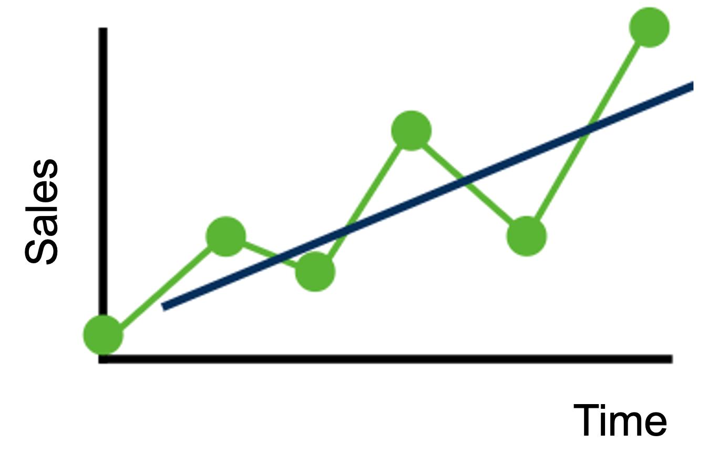
Seasonality
Regular up and down fluctuations
May be due to weather, prescription refills, etc.
Occurs within one year (unlikely to have seasonality if you have annual data)
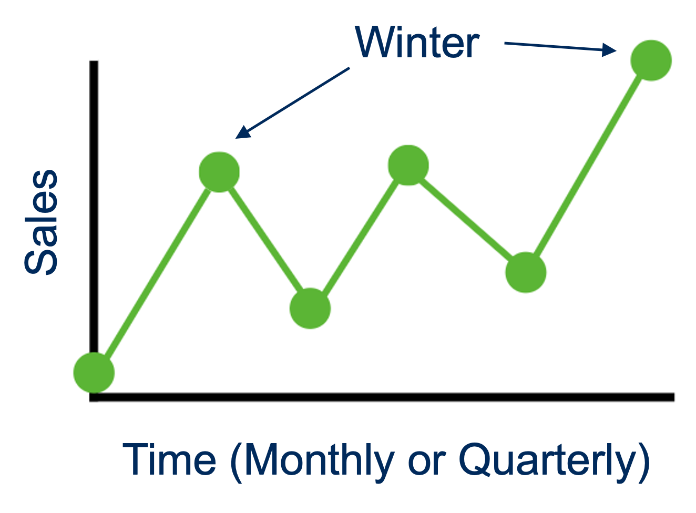
Cycles
Upward and downward swings
E.g., housing sales, immigration patterns
Unlike seasonality, may vary in length, often lasting years on end
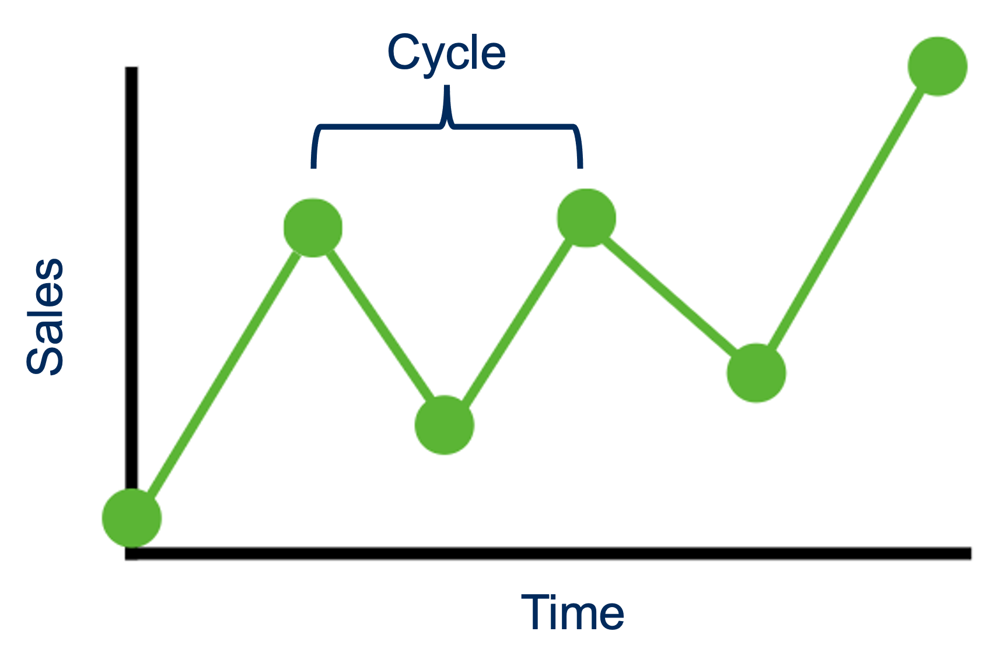
Autocorrelation
The correlation between a data point and a lagged version of itself
Can be positive or negative
E.g., stock market, “hot/cold streaks” in sports
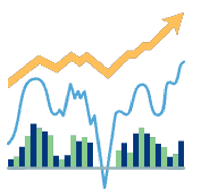
Other
Interventions
Policy/formulary change
Supply chain disruption
Pandemic
Irregularities/randomness
Not systematic
Residual fluctuations
Unrepeating
Time series analyses
What kinds of questions do we ask?
Impact of interventions
Forecasting
Descriptive analysis
Trend analysis
Time series analyses
Approaches
Regression models that regress \(x_t\) on \(t\)
ARIMA models that relate the present value to a series of past values and shocks
In ARIMA, the idea is to iteratively model the time series process - you’ll know when you’re successful because the residuals will be patternless white noise:
Mean 0
Variance constant
Uncorrelated
Regression
\[
x_t = f(t)
\]
Trend: e.g., linear \(t\), quadratic \(t^2\)
Seasonality: an indicator variable for each season
For example, a time series with linear trend and quarterly seasonality may be modelled with: \[
x_t = \beta_1 t + \alpha_1 S_1 + \alpha_2 S_2 + \alpha_3 S_3 + \alpha_4 S_4 + \epsilon_t
\]
ARIMA
AR: autoregression
I: integrated
MA: moving average
Autoregression (AR model)
AR(1) means that we use the last 1 observation to predict the present time: \[
\begin{align}
x_t
&= \delta + \phi x_{t-1} + w_t \\
&= \delta + \phi (\delta + \phi x_{t-2} + w_{t-1}) + w_t \\
&...
\end{align}
\]
\(\delta\) is the intercept
\(\phi\) is the slope (persistence); \(|\phi| < 1\) for stationary series (more about this later), meaning the influence of previous lags decays over time
\(w_t \overset{iid}{\sim} N(0,\sigma_w^2)\)
Autoregression (AR model)
\(t\)
\(x_t\)
\(x_{t-1}\)
1
8
*
2
10
8
3
11
10
4
7
11
5
9
7
The present value carries information from everything before, because the relationship is transmitted through intermediate lags
Correlations between \(x_t\) and lagged values (\(t-1, t-2, t-3, \dots\))
Useful for applying to both the raw series, as well as the model residuals
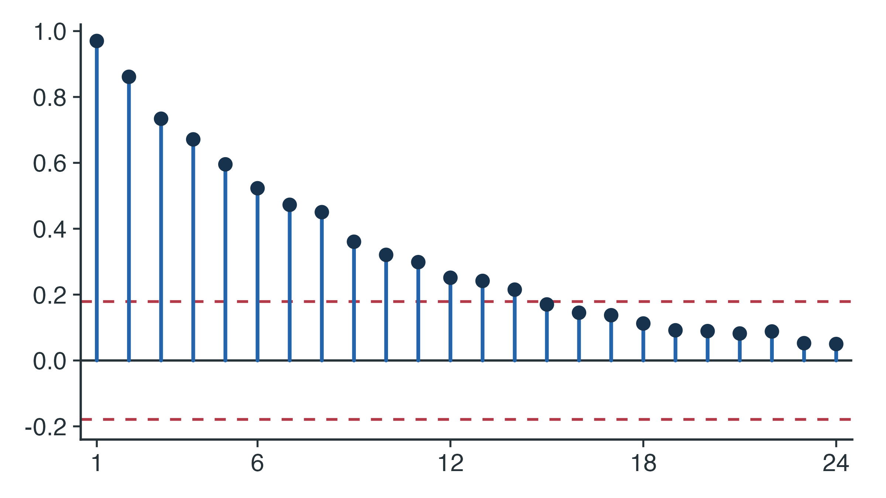
Partial autocorrelation function (PACF)
Correlation between \(x_t\) and \(x_{t-h}\) after conditioning on the values in between
Does \(x_{t-h}\) have a direct effect on \(x_t\) that is not via intermediate values?
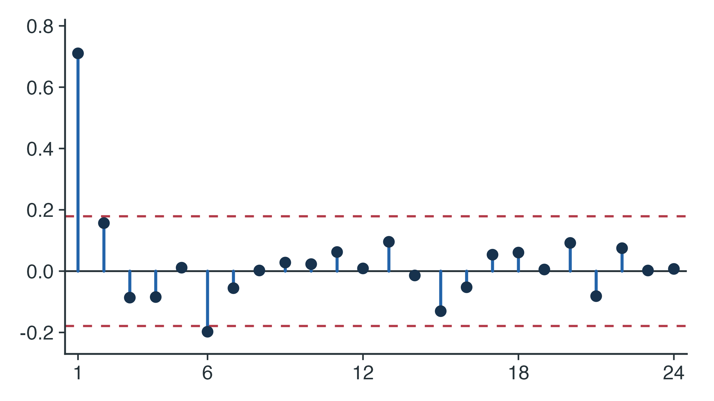
Very useful for determining AR orders
PACF will spike at the corresponding lag, then shut off to zero afterwards
Stationarity
A series is (weakly) stationary if:
Mean constant
Variance constant
Covariance between \(x_t\) and \(x_{t-h}\) is the same for all \(t\) at each lag \(h\)
White noise is a special type of stationarity
Stationarity may be addressed with differencing
ACF and PACF patterns (later) will not have their standard interpretations until the series is stationary. ACF of a non-stationary series will decay very slowly.
Stationarity
Trend violates stationarity
Augmented Dickey-Fuller (ADF) test:
\(p>0.05\) suggests a need to difference.
Seasonality violates stationarity
Osborn-Chui-Smith-Birchenhall (OCSB) test:
\(p>0.05\) suggests a need to seasonally difference.
Differencing
Think of it as differentiation but for a discrete variable
First differencing:
\[
\nabla x_t = x_t – x_{t-1}
\]
Second differencing:
\[
\nabla^2 x_t = \nabla x_t - \nabla x_{t-1}
\]
We often need first differencing, and rarely more than second differencing
Over-differencing can introduce autocorrelation where none existed before
Seasonal differencing
Seasonal (here, monthly) differencing:
\[
\nabla_{12} x_t = x_t – x_{t-12}
\]
Seasonality skips intermediate lags
Not the same as twelfth differencing
Moving average (MA model)
AR processes are not the only way to generate autocorrelation
AR captures autocorrelation in past values (e.g., \(x_{t-1}\))
MA captures autocorrelation in past shocks (e.g., \(w_{t-1}\))
Shocks are prediction errors
In AR, the present value carries information from everything before
In MA, the present value carries information from a fixed number of lags
Let’s break this down into two regression lines (set \(t = 0\) for time of intervention): \[
\begin{align}
\text{Before intervention } (I_t = 0) &: y_t = \beta_0 + \beta_1 t + \epsilon_t \\
\text{After intervention } (I_t = 1) &: y_t = (\beta_0 + \beta_2) + (\beta_1 + \beta_3) t
\end{align}
\]
\(\beta_0\) is the pre-intervention level (extrapolated) at the time of intervention
\(\beta_1\) is the pre-intervention slope (trend)
\(\beta_2\) is the immediate change in level at the intervention
\(\beta_3\) is the change in slope (trend) following the intervention
\(\beta_1 + \beta_3\) is the post-intervention slope
Intervention analysis: segmented regression
Can model non-linear deterministic trend with polynomials or splines
Can model deterministic seasonality using indicator variables
Intervention analysis: interventional ARIMA
\[
y_t = \delta_0 I_t + w_t
\]
\(I_t\) is the intervention (see next slide)
\(w_t \sim ARIMA \; (p,d,q) \times (P,D,Q)\)
Intervention analysis: interventional ARIMA
Intervention
Equation
Permanent step
\(I_t = \begin{cases} 0, & t < T \\ 1, & t \geq T \end{cases}\)
Temporary step over \(d\)
\(I_t = \begin{cases} 0, & t < T \\ 1, & T \leq t < T+d \\ 0, & t \geq T+d \end{cases}\)
Pulse
\(I_t = \begin{cases} 0, & t \neq T \\ 1, & t = T \end{cases}\)
Ramp
\(I_t = \begin{cases} 0, & t < T \\ t-T+1, & t \geq T \end{cases}\)
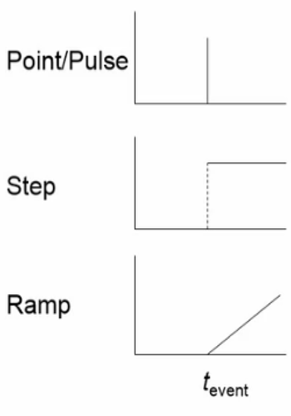
You can model multiple interventions (e.g., step + ramp)3
Interventions should be pre-specified
Name that fit: #1
Scenario: Drug recall and shortage in July 2018
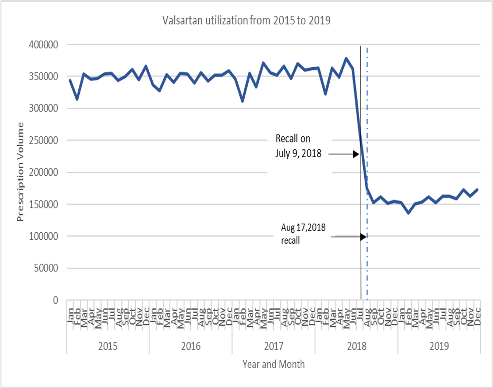
Name that fit: #2
Scenario: COVID-19 pandemic lockdowns impact on salbutamol (albuterol) inhalers
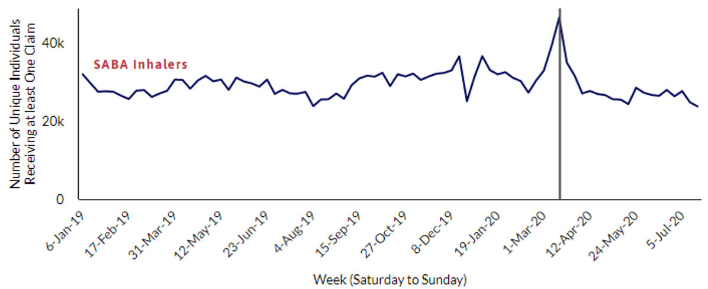
Name that fit: #3
Scenario: Introduction of a new biosimilar on formulary
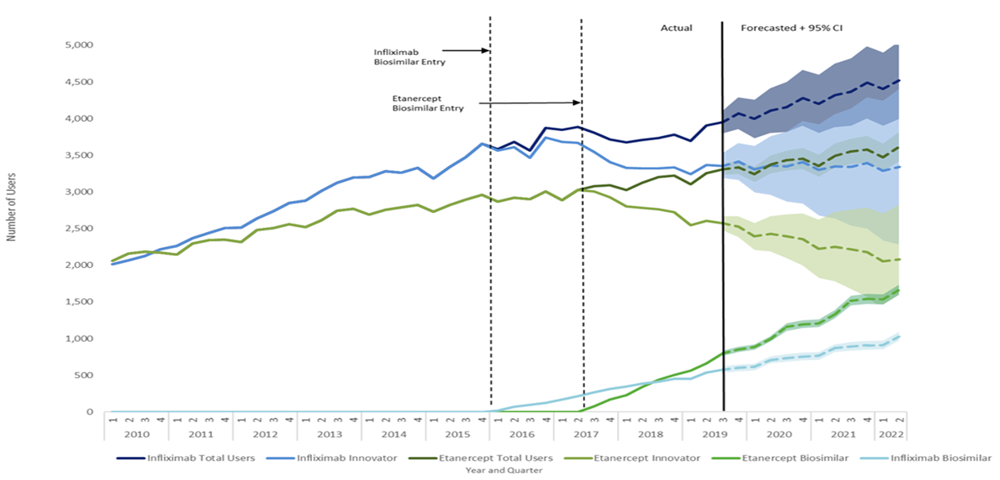
Name that fit: #4
Scenario: New policy to limit access to a medication class, announced with one month until change
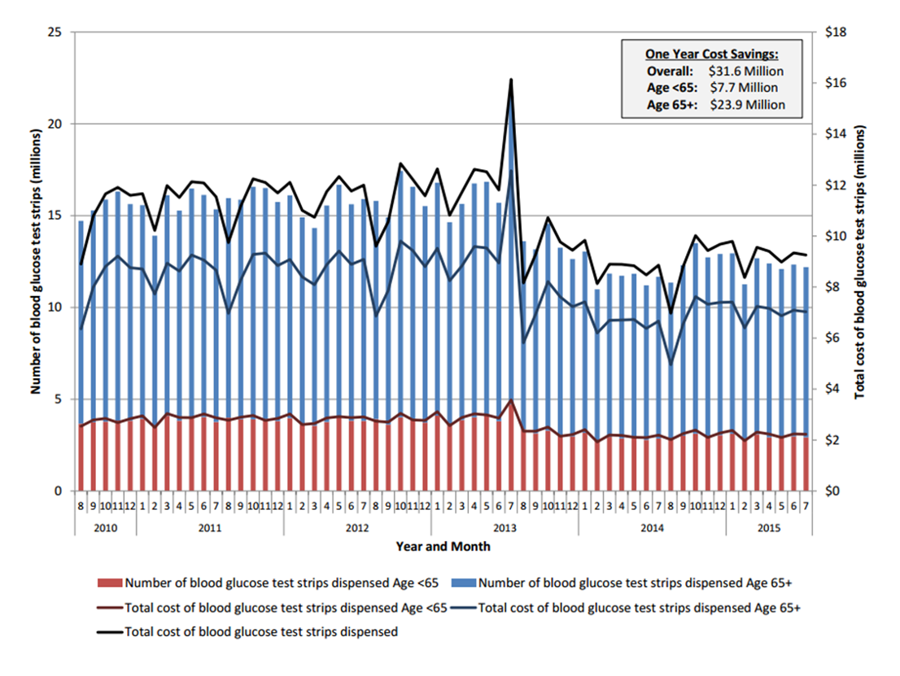
References
1.
Gomes T, Martins D, Tadrous M, et al. Association of a Blood Glucose Test Strip Quantity-Limit Policy With Patient Outcomes: A Population-Based Study. JAMA Intern Med. 2017;177(1):61-66. doi:10.1001/jamainternmed.2016.6851
Schaffer AL, Dobbins TA, Pearson SA. Interrupted time series analysis using autoregressive integrated moving average (ARIMA) models: A guide for evaluating large-scale health interventions. BMC Med Res Methodol. 2021;21(1):58. doi:10.1186/s12874-021-01235-8